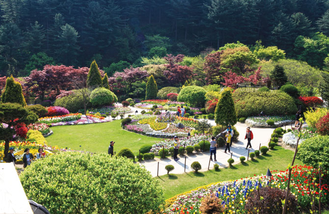

수목원 소개 |
방문안내 |
관람안내 |
개인/단체 체험 |
고객센터 |
공지사항

+ 방문안내
1. 이용요금
어른 : 9,500원
청소년 : 7,000원
어린이 : 6,000원
2. 교통안내
버스 : 터미널(동서울, 지방터미널 등) 또는 청량리 환승센터 1번에서 출발하여 청평터미널 도착
지하철 : 경춘선을 이용하여 청평역 도착
택시 : 청평 시내에서 수목원까지 정체 없이 약 20분이 소요되며, 요금은 15,000원 안팎입니다.
3. 관람 유의사항
※ 수목원은 자연과 더불어 사는 우리 인간에게 매우 소중한 존재입니다.
방문해주신 모든 분께 감사드립니다.^^